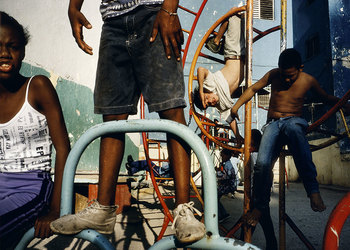

13/03/2018
"Ser breve, en arte, es suprema moralidad", decía Juan Ramón Jiménez, y todo lo que esta historia tiene de breve, lo tiene también de suprema. Hace unos días, un chaval de 18 años escribía un hilo en Twitter dirigido a sus 70 seguidores que, sin saberlo, iba a dar un vuelco a la vida de un hombre de 82 años.
'Players': la fotografía como juego.
13/03/2018
Cristina de Middel y Martin Parr proponen una mirada lúdica a la vida a partir del archivo de la agencia Magnum. La exposición Players, inaugurada en el Espacio Fundación Telefónica, inaugura la sección Carta blanca del festival.
'Karate Kid' vuelve 34 años después en una webserie, y es buena.

09/05/18
La serie Cobra Kai, distribuida por YouTube Red, es la secuela de la mítica historia iniciada con el señor Miyagi en 1984. Esta vez se centra en Johnny Lawrence, dedicado a la cerveza y a arreglar cañerías, y aún atormentado por la derrota con "una patada ilegal" de Larusso.